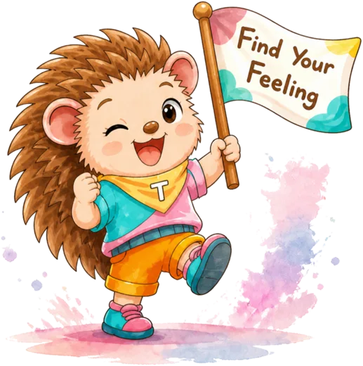
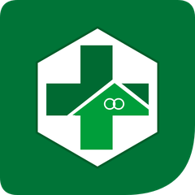
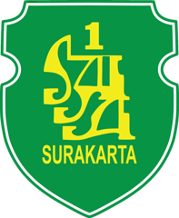
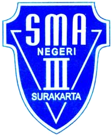

HEALO with TEMU
Banyak remaja menyimpan beban setelah mengalami peristiwa berat tanpa memahami apa yang sedang dirasakan dan ke mana harus mencari pertolongan. HEALO hadir untuk membantumu mengenali gejala trauma, mendeteksi tanda awal PTSD melalui skrining PCL-5, dan terhubung dengan guru BK, psikolog, serta Puskesmas mitra.

Empat fitur untuk mendampingimu
Edukasi PTSD
Perbedaan stres sehari-hari, peristiwa traumatis, dan PTSD dijelaskan dengan bahasa yang mudah dipahami.
Skrining PCL-5
Dua puluh pertanyaan singkat untuk mengenali gejala awal. Hasilnya bukan diagnosis.
Tanya TEMU
Teman bercerita berbasis AI untuk bertanya seputar perasaan, trauma, dan kesehatan mental.
Pusat Bantuan
Kontak guru BK, Puskesmas mitra, psikolog, dan layanan krisis 24 jam.
Meminta bantuan bukanlah tanda kelemahan
Banyak di antara kita memilih memendam masalah sendirian. HEALO dirancang agar kamu dapat memahami perasaanmu secara pribadi dan mengetahui langkah yang tepat ketika membutuhkan dukungan.
Skor skrining dihitung di perangkatmu. Untuk siswa SMA Negeri 1 dan SMA Negeri 3 Surakarta, hasilnya dikirim hanya ke guru BK sekolah masing-masing agar dapat ditindaklanjuti.
Lihat Pusat Bantuan
Bekerja sama dengan



Mendukung program Posyandu Plus 6 SPM Kota Surakarta